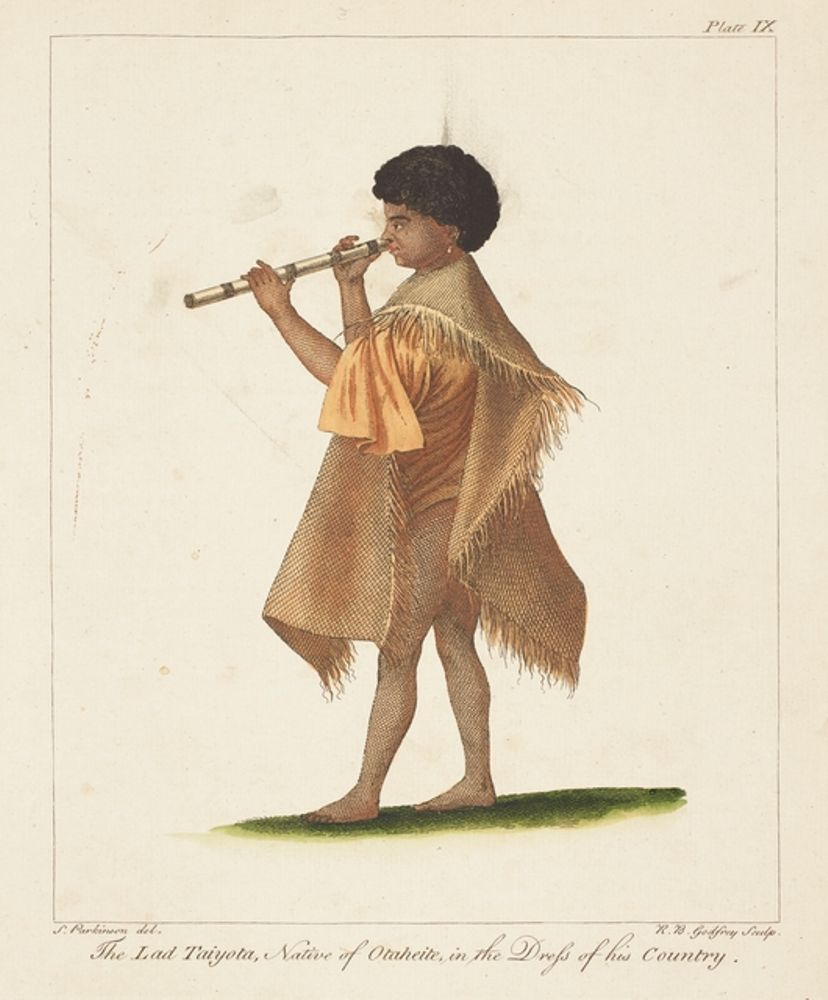

The Pacific Islanders — farthest from home

Tupaia was born into Polynesian nobility on Ra'iatea — an island so sacred it was considered the spiritual centre of the entire Pacific. He trained at Taputapuatea, the greatest marae (temple complex) in Polynesia, mastering celestial navigation: reading stars, ocean swells, wind patterns, migrating birds, and cloud formations to cross thousands of miles of open ocean without instruments. He was also an arioi — a member of an elite guild of priests, performers, and keepers of ancestral memory.
In 1757, Bora Boran warriors invaded Ra'iatea. Tupaia fled to Tahiti as a refugee, still bearing battle scars from a spear tipped with a stingray barb. He rebuilt his life as chief adviser to Purea, a powerful woman the British called the "Queen" of Tahiti. He was known across the islands as a genius — intellectually formidable, proud, and politically sharp. When the Endeavour arrived in 1769, he saw his chance to get back to sea.
→ Source: Te Ara NZ BiographyTupaia navigated the Endeavour through the Pacific islands, personally diving to measure the depth of reef passes so Cook could sail safely. When the ship reached New Zealand, he discovered he could speak to the Māori — they shared ancient Polynesian roots. He became the voyage's essential translator and diplomat, preventing multiple violent confrontations. Cook wrote: "He was a Shrewd Sensible, Ingenious Man."
He also produced a remarkable map of 74+ Pacific islands using completely different logic to European cartography — encoding sailing routes, currents, and winds rather than fixed positions. Scholars are still decoding it today. He also drew and painted alongside Parkinson, producing some of the earliest indigenous perspectives on the European encounter. He amazed sailors by correctly pointing toward Tahiti even after the ship had sailed around New Zealand and up to Indonesia.
→ Source: Knowable Magazine (his map)- In 2019, navigators from Tahiti and Ra'ivavae sailed the ship Fa'afaite from Tahiti to New Zealand using only stars and ocean currents — in Tupaia's honour, marking the 250th anniversary of his voyage
- His map is actively researched today by scholars at the University of Potsdam, Germany — a 2019 paper proposed a new way of reading it that changes everything
- Major exhibitions at Te Papa Museum, Wellington, New Zealand celebrate him as one of the greatest navigators in human history
- His drawings survive at the British Library and Natural History Museum London — some of the earliest Pacific art in existence
- Buried on Damar Besar island near Jakarta — grave now lost
Many Māori believed Tupaia — not Cook — was the leader of the expedition. He was a high priest from a sacred island their ancestors had left centuries ago. Banks wrote of him: "I do not know why I may not keep him as a curiosity, as well as some of my neighbours do lions and tigers." His contributions were essential. His credit was almost nothing. No portrait of him survives — only the drawings he made himself.

Taiata was about 12 years old when the Endeavour left Tahiti in July 1769. He was Tupaia's servant and acolyte — described in ship records as being of the "tow-tow" (servant) caste, but noted by crew members for his remarkable intelligence and warmth. He boarded under the personal "protection" of Joseph Banks, who described Tupaia as a curiosity to collect — and Taiata came with him.
Almost nothing else is known about his background, his family, or his life before the voyage. He is one of the least documented people in the entire history of the Endeavour — a boy who crossed the Pacific and the Indian Ocean and died in a Dutch colonial port city at roughly 13 years old, thousands of miles from his home island. His background, birthdate, and full name are all unknown.
→ Source: Nat Waddell (dedicated article)Ship records give almost no account of what Taiata specifically did on the voyage. He accompanied Tupaia as his personal attendant — present at every port, every cultural exchange, every negotiation. He would have been by Tupaia's side when the priest navigated, translated, and mediated. He likely assisted in small ways that were never recorded.
Sydney Parkinson drew his portrait during the voyage — one of the only deliberate acts of documentation anyone made about him personally. That drawing is now the only proof he existed.
- His only surviving image — Parkinson's drawing titled "The Lad Taiyota, native of Otaheite, in the Dress of his Country" — is held at the British Museum, London
- Buried with Tupaia on Damar Besar island, near Jakarta — grave now lost
- No landmarks, memorials, or named places exist in his honour anywhere in the world
On December 17th, 1770 in Batavia, Taiata called out to those around him: "Tyua mate oee" — "My friends, I am dying." An eyewitness recorded that he died "like a patriarch, taking leave of us pathetically, each by name." He was roughly 13 years old. His death broke Tupaia completely — the high priest died just three days later.